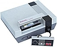
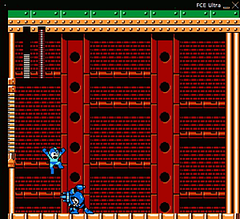

NES Emulator
Archivierte Anleitung
Dieser Artikel wurde archiviert, da er - oder Teile daraus - nur noch unter einer älteren Ubuntu-Version nutzbar ist. Diese Anleitung wird vom Wiki-Team weder auf Richtigkeit überprüft noch anderweitig gepflegt. Zusätzlich wurde der Artikel für weitere Änderungen gesperrt.
Zum Verständnis dieses Artikels sind folgende Seiten hilfreich:
 Das Nintendo_Entertainment_System, oder kurz NES, ist eine 8-bit-Videospielkonsole von Nintendo. Erschienen ist sie in Nordamerika, Brasilien, Europa, Asien und Australien. Die japanische Version ist bekannt als Famicom (Nintendo Family Computer). Das NES war mit mehr als 60 Millionen verkaufter Geräte weltweit lange Zeit die meistverkaufte Konsole überhaupt.
Für Linux existieren Emulatoren, mit deren Hilfe man die Spiele ohne eine Konsole zu besitzen spielen kann, wenn man ein Backup der Spiele als ROMs auf dem Computer hat.
|  |
FCE Ultra  |
FCE Ultra¶
FCE Ultra ist ein Crossplatform-NES-Emulator, der auch Sound und OpenGL untersützt. Zu ihm existiert ein eigener Artikel hier im Wiki.
nestra¶
nestra ist ein NES-Emulator, der keinen Sound unterstüzt, aber auch aus den Paketquellen installiert [1] werden kann:
nestra (multiverse)
 mit apturl
mit apturl
Paketliste zum Kopieren:
sudo apt-get install nestra
sudo aptitude install nestra
Man startet ein Spiel, indem man nestra vom Terminal [2] aus mit dem Spiel als Parameter aufruft, also zum Beispiel:
nestra supmario.nes
Hinweis!
Fremdpakete können das System gefährden.
Fakenes¶
Fakenes ist ein NES-Emulator mit grafischer Oberfläche und weitreichenden Einstellmöglichkeiten. Fakenes bietet mit Abstand die meisten Funktionen im Vergleich zu den anderen für Linux verfügbaren NES-Emulatoren. Die grafische Darstellung lässt sich z.B. mittels Filter optisch aufpolieren und anpassen und vieles mehr. Diese Eigenschaften machen Fakenes zum idealen NES-Emulator besonders für Anfänger.
Das Programm findet sich derzeit nicht in den Paketquellen. Fakenes kann aber hier  als .deb-Paket heruntergeladen und installiert werden. Danach kann dann durch einfaches Eingeben von:
als .deb-Paket heruntergeladen und installiert werden. Danach kann dann durch einfaches Eingeben von:
fakenes
im Terminal [2] die grafische Oberfläche gestartet werden.
Die Spiele (Roms) müssen zwingend die Dateiendung .nes haben. Das aus einem Verzeichnis zu ladende Spiel muß doppelt angeklickt werden, da sonst Fakenes das erste im Verzeichnis verfügbare statt dessen startet.
Nestopia¶
Nestopia ist unter Linux und Windows die Referenz bei NES-Emulatoren was Kompatiblität mit Spielen angeht. Leider bietet die Linuxversion eine vergleichsweise spartanische grafische Oberfläche. Das Programm ist bislang nicht als deb Paket zu bekommen, eine Installation aus dem Quellcode bricht unter Ubuntu mit einer Fehlermeldung ab.
Dennoch kann das Programm folgendermaßen installiert werden. Dazu müssen vor der Installallation von Nestopia folgende Pakete installiert werden [1]:
libasound2-dev
libsdl-gfx1.2-4 (universe)
libsdl-gfx1.2-dev (universe)
build-essential
mit apturl
Paketliste zum Kopieren:
sudo apt-get install libasound2-dev libsdl-gfx1.2-4 libsdl-gfx1.2-dev build-essential
sudo aptitude install libasound2-dev libsdl-gfx1.2-4 libsdl-gfx1.2-dev build-essential
Zuerst muss ein beliebiger Ordner in einem beliebigen Verzeichnis, z. B. dem Homeverzeichnis, erstellt und in diesen Ordner gewechselt werden.
mkdir ~/Nestopia cd ~/Nestopia
Danach muss das Quellcodepaket von sourceforge und das Linux-Overlay von mameworld.info heruntergeladen werden.
wget http://prdownloads.sourceforge.net/nestopia/Nestopia140src.zip wget --user-agent="Mozilla/5.0 (X11; U; Linux i686; de-DE; rv:1.9.1.6) Gecko/20091226 Firefox/3.5.6" http://rbelmont.mameworld.info/nst140_lnx_release_h.zip
Nun müssen die Pakete entpackt [4] werden. Dabei ist unbedingt zu beachten, dass das Quellcodepaket vor dem Overlay entpackt wird!
unzip Nestopia140src.zip ; unzip nst140_lnx_release_h.zip
Jetzt muss kompiliert werden.
make
Sollte beim Kompilieren die Meldung
Package gtk+-2.0 was not found in the pkg-config search path. Perhaps you should add the directory containing `gtk+-2.0.pc' to the PKG_CONFIG_PATH environment variable
erscheinen, gefolgt von vielen Fehlermeldungen, so muss davor noch das Paket libgtk2.0-dev installiert werden.
Jetzt wird das Verzeichnis ~/.nestopia erstellt. Dorthin müssen nstcontrols und NstDatabase.xml kopiert werden.
mkdir ~/.nestopia cp nstcontrols ~/.nestopia/nstcontrols ; cp NstDatabase.xml ~/.nestopia/NstDatabase.xml
Optional. Nur wenn man entsprechende Games spielen will. Nun muss hier http://www.mediafire.com/?ldkz2bqcb4ji4da noch eine Datei heruntergeladen und in das Verzeichnis ~/.nestopia/ verschoben werden.
mv <DOWNLOADVERZEICHNIS>disksys.rom ~/.nestopia/
Danach kann das Spiel aus dem vorher erstellten Ordner im Benutzerverzeichis bzw. dem gewählten Ort so gestartet werden:
./nst

- Erstellt mit Inyoka
-
 2004 – 2017 ubuntuusers.de • Einige Rechte vorbehalten
2004 – 2017 ubuntuusers.de • Einige Rechte vorbehalten
Lizenz • Kontakt • Datenschutz • Impressum • Serverstatus -
Serverhousing gespendet von